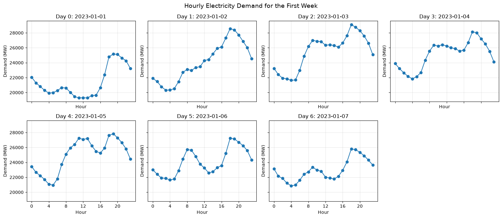
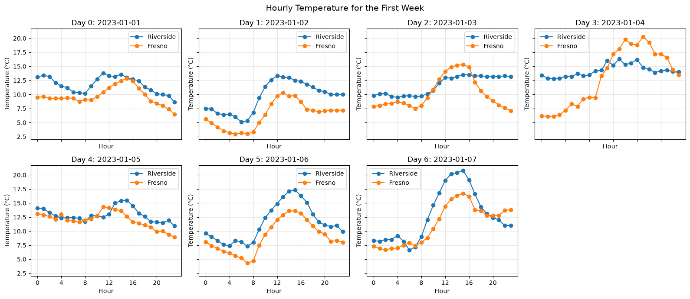

import json
from pathlib import Path
import matplotlib.pyplot as plt
import numpy as np
import pandas as pdElectricity demand: data overview
Where the data comes from
- Hourly demand: EIA-930 Hourly Electric Grid Monitor, six-month bulk files (
EIA930_BALANCE_{year}_{Jan_Jun|Jul_Dec}.csv), restricted to the California ISO balancing authority (CISO). The EIA publishes each day’s demand with about a one-day lag, and no API key is needed. - Hourly weather: Open-Meteo,
historical-forecastendpoint, for two stations: Fresno (36.74, -119.79), in PG&E’s Central Valley, and Riverside (33.95, -117.40), in SCE’s Inland Empire. Both are inside the CAISO balancing area; Sacramento and Los Angeles are not (they are served by SMUD and LADWP, which are separate balancing authorities). This endpoint serves the same forecast-model data from 2022 to today, so the training set and the later hold-out come from one consistent source.
Both are downloaded and joined by scripts/build_dataset.py (training set, 2023-01-01 to the freeze date). The hold-out is fetched later by scripts/fetch_holdout.py, from days after the submission deadline, with identical features.
What “demand” means here
CAISO does not sum customer meters. Demand is metered generation inside the area minus net exports to neighbouring areas, so it covers every consumer (homes, businesses, industry) plus grid losses, with two caveats:
- Rooftop solar is invisible: it is not metered generation, so it shows up as lower demand on sunny middays.
- Battery charging counts as demand. Charging grew with CAISO’s battery fleet, from about 0.3 GW (daily average) in 2022 to about 2 GW in 2026, and up to 8 GW at midday. This is a dispatch decision, not weather, and it gives the series an upward midday trend over the years.
Processing highlights
- Time alignment.
timestamp_utcmarks the start of the hour. The EIA reports “hour ending”, so its timestamps are shifted back one hour. Open-Meteo temperature and humidity are instantaneous values at the start of the hour; radiation is an average over the preceding hour, so it is shifted back one hour to cover the same hour as the demand. - Calendar features are computed in local time (
America/Los_Angeles):hour,day_of_week,day_of_year, andis_holiday(US federal holidays). On the autumn daylight-saving day,timestamp_localrepeats 01:00; usetimestamp_utcto order rows. day_indexcounts days since the training start. It lets shuffled folds interpolate the demand level at any date, but test dates lie beyond its training range: it is the trap for random K-fold CV.- Weather per station (
fresno_*,riverside_*): temperature (°C), relative humidity (%), shortwave solar radiation (W/m², direct plus diffuse sunlight on a horizontal surface), and the max and min temperature over the 24 hours ending at the row. Weather comes from a weather model’s analysis of the actual conditions, not a forecast made in advance, so the exercise assumes a perfect weather forecast. - No lagged demand, by design: with lags, hyperparameters barely matter and CV choices stop being interesting.
- Excluded: the grid operator’s own day-ahead forecast is in the EIA file but is dropped (it is nearly the answer).
- Cleaning: isolated one-hour reporting glitches (more than 20% away from the centred 5-hour median; one hour so far, 2025-07-31) are set to missing, and rows with missing demand or weather are dropped (about 130 hours, mostly in multi-hour EIA reporting gaps).
- Response:
demand_mw, hourly demand in MW.
DATA_DIR = Path("data") # written by scripts/build_dataset.py
X_train = pd.read_csv(DATA_DIR / "X_train.csv", parse_dates=["timestamp_utc", "timestamp_local"])
y_train = pd.read_csv(DATA_DIR / "y_train.csv")["demand_mw"]
metadata = json.load(open(DATA_DIR / "metadata.json"))
print(metadata["train_start"], "to", metadata["train_end"], "|", X_train.shape)
X_train.head()2023-01-01 to 2026-10-07 | (32895, 17)| timestamp_utc | timestamp_local | hour | day_of_week | day_of_year | is_holiday | day_index | fresno_temp | fresno_rh | fresno_rad | fresno_tmax_24h | fresno_tmin_24h | riverside_temp | riverside_rh | riverside_rad | riverside_tmax_24h | riverside_tmin_24h | |
|---|---|---|---|---|---|---|---|---|---|---|---|---|---|---|---|---|---|
| 0 | 2023-01-01 08:00:00 | 2023-01-01 00:00:00 | 0 | 6 | 1 | 0 | 0 | 9.5 | 90.0 | 0.0 | 14.8 | 9.5 | 13.1 | 96.0 | 0.0 | 14.4 | 12.0 |
| 1 | 2023-01-01 09:00:00 | 2023-01-01 01:00:00 | 1 | 6 | 1 | 0 | 0 | 9.6 | 90.0 | 0.0 | 14.8 | 9.5 | 13.4 | 89.0 | 0.0 | 14.4 | 12.0 |
| 2 | 2023-01-01 10:00:00 | 2023-01-01 02:00:00 | 2 | 6 | 1 | 0 | 0 | 9.3 | 92.0 | 0.0 | 14.8 | 9.3 | 13.2 | 89.0 | 0.0 | 14.4 | 12.0 |
| 3 | 2023-01-01 11:00:00 | 2023-01-01 03:00:00 | 3 | 6 | 1 | 0 | 0 | 9.3 | 93.0 | 0.0 | 14.8 | 9.3 | 12.1 | 92.0 | 0.0 | 14.4 | 12.0 |
| 4 | 2023-01-01 12:00:00 | 2023-01-01 04:00:00 | 4 | 6 | 1 | 0 | 0 | 9.3 | 93.0 | 0.0 | 14.8 | 9.3 | 11.5 | 87.0 | 0.0 | 14.4 | 11.5 |
fig, axes = plt.subplots(2, 4, figsize=(16, 7), sharex=True, sharey=True)
axes = axes.ravel()
for i in range(7):
mask = X_train["day_index"] == i
axes[i].plot(
X_train.loc[mask, "hour"],
y_train.loc[mask],
marker="o",
linewidth=1.5,
)
date = X_train.loc[mask, "timestamp_local"].dt.strftime("%Y-%m-%d").iloc[0]
axes[i].set_title(f"Day {i}: {date}")
axes[i].set_xlabel("Hour")
axes[i].set_ylabel("Demand (MW)")
axes[i].set_xticks(range(0, 24, 4))
axes[i].grid(True, alpha=0.3)
axes[7].axis("off")
fig.suptitle("Hourly Electricity Demand for the First Week", fontsize=14)
plt.tight_layout()
plt.show()
fig, axes = plt.subplots(2, 4, figsize=(16, 7), sharex=True, sharey=True)
axes = axes.ravel()
for i in range(7):
mask = X_train["day_index"] == i
axes[i].plot(
X_train.loc[mask, "hour"],
X_train.loc[mask, "riverside_temp"],
marker="o",
linewidth=1.5,
label="Riverside",
)
axes[i].plot(
X_train.loc[mask, "hour"],
X_train.loc[mask, "fresno_temp"],
marker="o",
linewidth=1.5,
label="Fresno",
)
date = X_train.loc[mask, "timestamp_local"].dt.strftime("%Y-%m-%d").iloc[0]
axes[i].set_title(f"Day {i}: {date}")
axes[i].set_xlabel("Hour")
axes[i].set_ylabel("Temperature (°C)")
axes[i].set_xticks(range(0, 24, 4))
axes[i].grid(True, alpha=0.3)
axes[i].legend()
axes[7].axis("off")
fig.suptitle("Hourly Temperature for the First Week", fontsize=14)
plt.tight_layout()
plt.show()